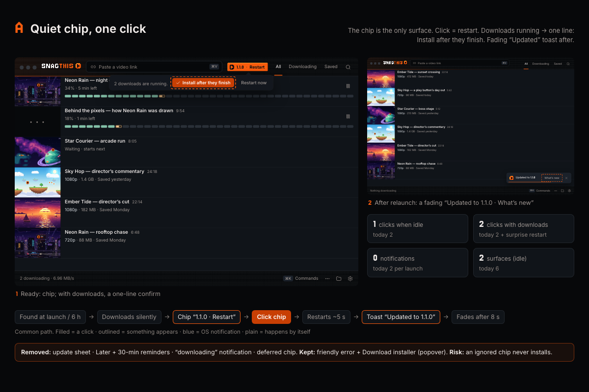
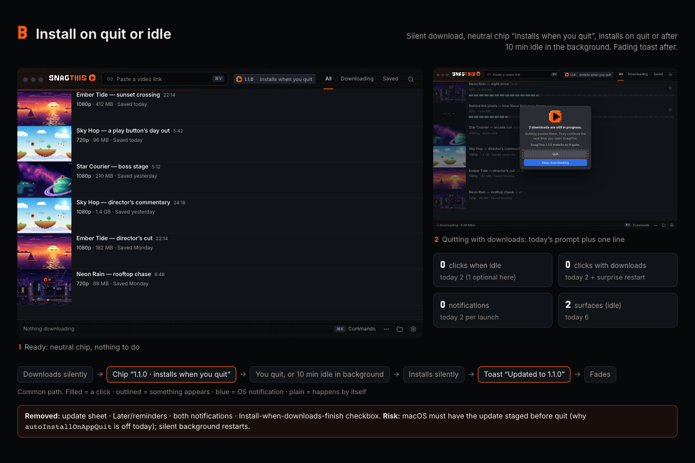
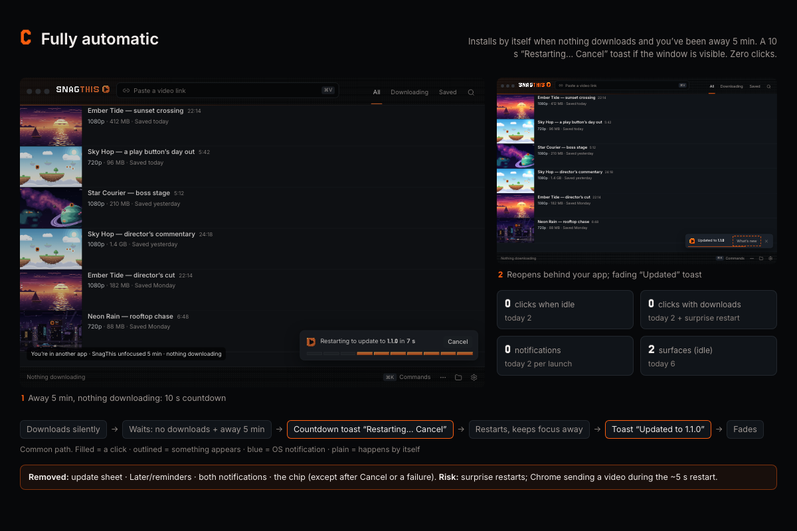

Make desktop updates as simple as the new Chrome pairing
Today a routine update shows 6 things (2 OS notifications, 2 chip states, 2 sheet states) and needs 2 clicks. Nothing confirms it worked afterwards, and an ignored update re-sends both notifications on every launch and never installs. Each option below removes the update sheet, Later/reminders and the “downloading” notification, keeps the friendly error with Download installer ↗, never interrupts a running download, never touches the queue, and ends with one fading Updated to 1.1.0 toast.
Owner decision (2026-09-29): B · Install on quit or idle, built as described in ui-design-spec §8.1. Later revision: the ready chip reads just 1.1.0 ready; the popover carries the line “Installs next time you quit SnagThis, or restart now.” and Settings shows 1.1.0 ready · Restart now.
“There are too many screens. Once we are done we should auto close the screens. Needs to be much simpler.” … “Same thing for our updates in desktop app.”
0Today, step by step
Captured from the real renderer’s design gallery (?gallery&update=<state>, script capture-today.cjs); OS notifications are drawn from the strings in main.js. Click a thumbnail for the full-size PNG. Counts: notifications · in-app surfaces (each distinct chip/sheet/toast state) · clicks.
Every surface today
- OS notification ×2 (
showUpdateNotification): “SnagThis 1.1.0 is downloading” onupdate-availableand “SnagThis 1.1.0 is ready” onupdate-downloaded. Shown even when the window is focused. Clicking either focuses the window and opens the sheet. - Header chip:
41%mini meter ·NEW 1.1.0accent ·1.1.0 · 3:45 PMafter Later · amberUpdate failed. Hidden when idle, checking or up to date. - Update sheet (500px modal, 9 views): checking, up to date, downloading, ready + What’s new, blocked (running downloads + “Install when downloads finish”), Later → toast with Undo, installing, errors (Details, Download installer, Try again).
- Settings ▸ Updates & support: one summary row with See update or Check now (which opens the sheet).
- After relaunch: nothing.
reconcileUpdaterInstallState()quietly deletes the install marker on success.
What makes it heavy
- Ignored updates repeat: the startup check finds the cached update again, so
update-availableandupdate-downloadedboth fire and both notifications come back on every launch.autoInstallOnAppQuitis off, so quitting never installs. - Install when downloads finish is armed only when the sheet is opened in the blocked view. If the person never opens it, nothing waits. If they do, SnagThis restarts without warning 3 s after the last download finishes.
- Later reminds every 30 min by turning the chip accent again (no notification). That adds another state, toast and Undo to a two-button decision.
- Failed install after relaunch sets an error with no version (
updateInfonull), so the chip stays hidden. The launch check 3 s later overwrites it, so the failure is effectively invisible. - No success moment: the notes are only in the sheet before installing; after installing nothing says it worked.
A–CThree simpler experiences
Each is a clickable storyboard (scenario tabs, dashed hotspots, ← →) in the app’s pixel/bevel style, with frames for idle, downloads running, window closed, ignored/cancel and failure/Applications, plus the code changes and risks. Frame PNGs are in each folder’s frames/.
Quiet chip, one click
Open →The chip is the only surface. 1.1.0 · Restart: one click restarts. With downloads running, one line: Install after they finish ✓. No sheet, no Later, no notifications unless the window is closed.

Idle 1 click · downloads 2 · notifications 0 (1 if window closed) · ignored: chip waits, never installs
Install on quit or idle · chosen
Open →Neutral chip 1.1.0 · installs when you quit. Installs silently on quit, or on macOS after 10 min idle with the window closed (relaunches hidden). Optional Restart now.

Idle 0 clicks · downloads 0 · notifications 0 · ignored: installs at next quit/idle
Fully automatic
Open →Installs itself when nothing downloads and you’ve been away 5 min. If the window is visible, a 10 s Restarting to update… Cancel toast; reopens without stealing focus. Cancel leaves a Restart chip.

Idle 0 clicks · downloads 0 · notifications 0 · ignored: that is the common path
=Comparison
| Today (C · Dedicated sheet) | A · Quiet chip | B · Install on quit/idle | C · Fully automatic | |
|---|---|---|---|---|
| (a) Update while idle | 6things shown (2 notif + 4 in-app) · 2clicks | 2shown (chip, toast) · 1click | 2shown (chip, toast) · 0clicks | 2shown (countdown, toast) · 0clicks |
| (b) Downloads running | 5shown (2 notif + 3) · 2clicks, then an unannounced restart; if the sheet is never opened it never waits | 3shown · 2clicks; 5 s cancellable “Restarting in…” chip | 2shown · 0clicks; installs at quit (today’s prompt + 1 line) or idle | 2shown · 0clicks; waits for downloads + 5 min away |
| (c) Ignored | 2 notifications on every launch, chip forever, never installs | Chip waits quietly, no repeats; never installs unless clicked | Installs at next quit or background idle | Installs at the next safe moment |
| OS notifications | 2 per version (+2 per relaunch) | 0; 1 per version only when the window is closed | 0 | 0 |
| After relaunch | Nothing (no confirmation) | One fading toast Updated to 1.1.0 · What’s new (8 s), popover notes on demand | ||
| Lingers | NEW chip until installed; sheet until closed | Chip until clicked | Neutral chip until quit | Nothing (chip only after Cancel) |
| Later / defer | Later → toast + Undo, reminder chip every 30 min | Removed (ignoring the chip is “later”) | Removed (the design is “later”) | Cancel → Restart chip, no auto for 4 h |
| Active downloads | Restart & install disabled; opt-in wait armed by opening the sheet | One-line confirm; main re-checks | Never while active; quit prompt unchanged | Never while active or in use |
| Failures | Same friendly sentence, You’re still on 1.0.0; nothing changed., Details, Download installer ↗, Try again. Options move it from the sheet into a small popover under an amber chip; B/C also surface a failed install on the next launch (fixes today’s hidden case). | |||
| macOS /Applications | No chip; Settings says “Move the app to /Applications” | No chip; Settings row offers Move to Applications (app.moveToApplicationsFolder(), relaunches) | ||
| Code size | — | Small: chip states, popover, remove sheet/Later, toast | Medium: + quit-time install, hidden relaunch, idle timer | Largest: + safe-moment watcher, countdown IPC, focus-less relaunch, extension retry |
| Main risk | — | Ignored updates never land | macOS Squirrel staging on quit (see autoInstallOnAppQuit comment); silent background restarts | Surprise restarts; Chrome requests during restart |